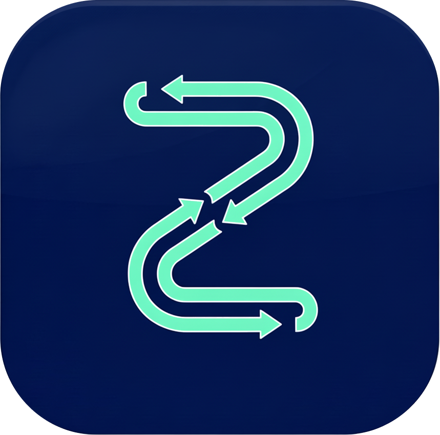
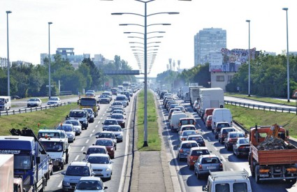
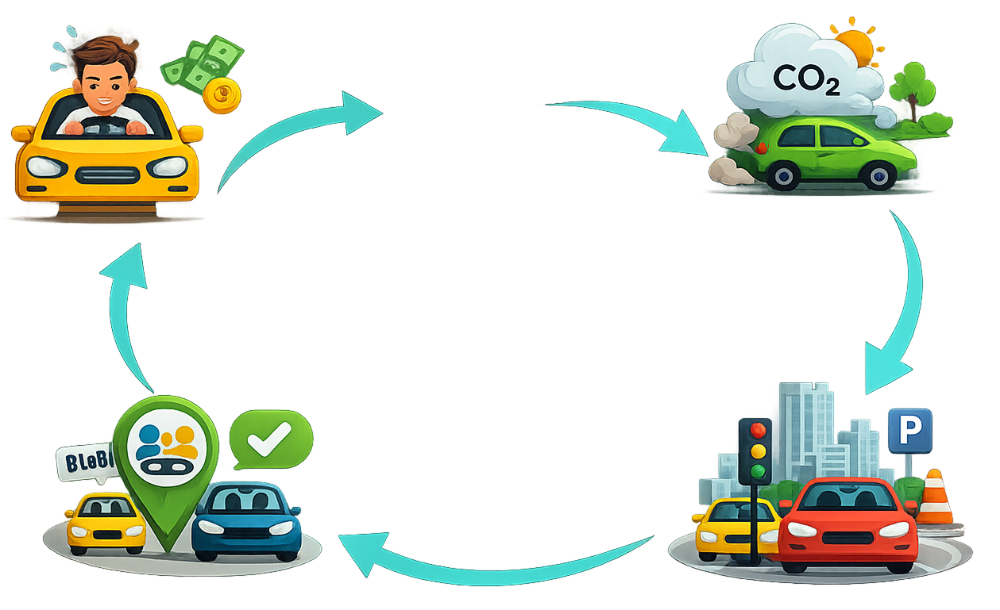
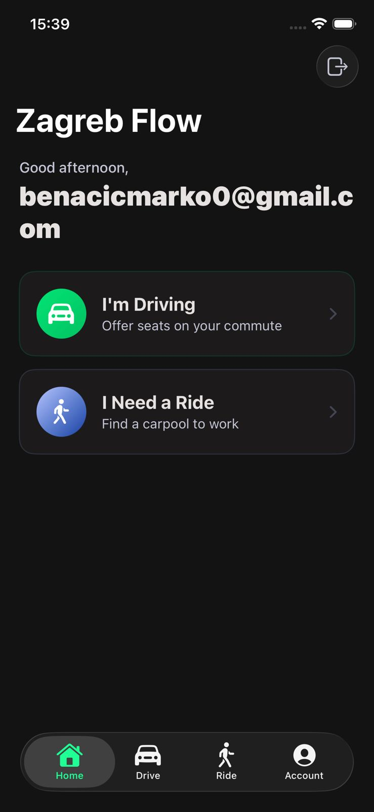
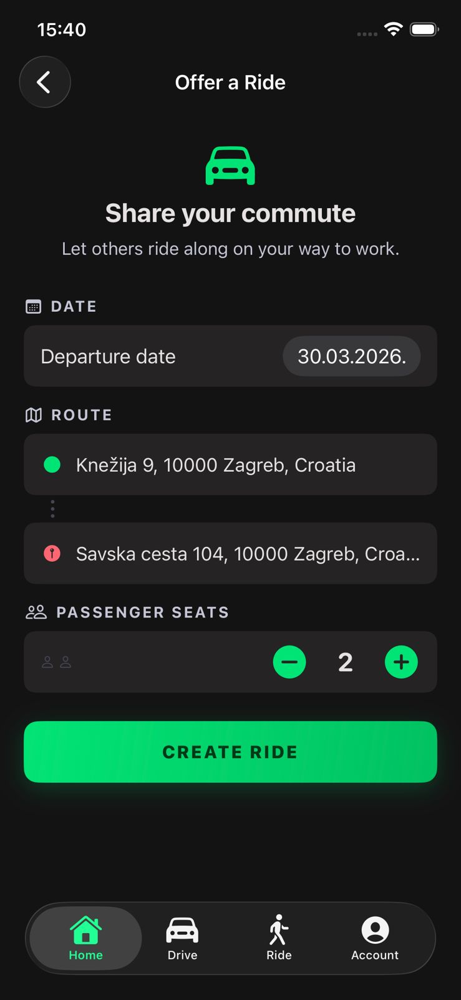
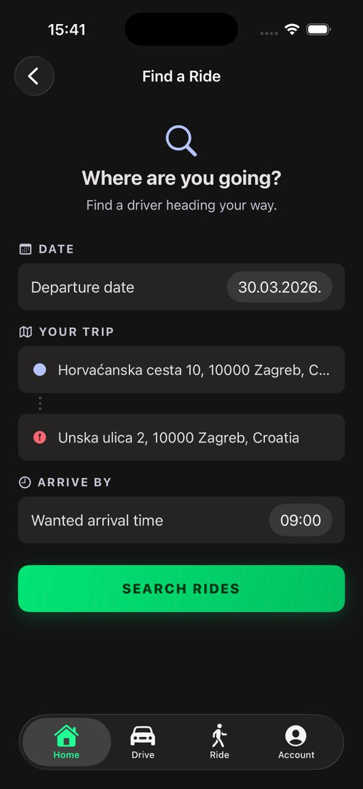
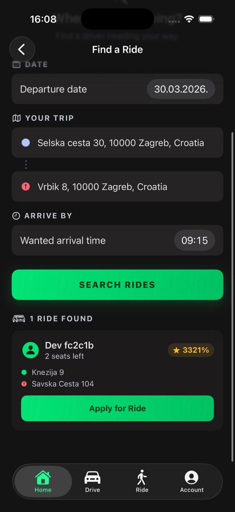
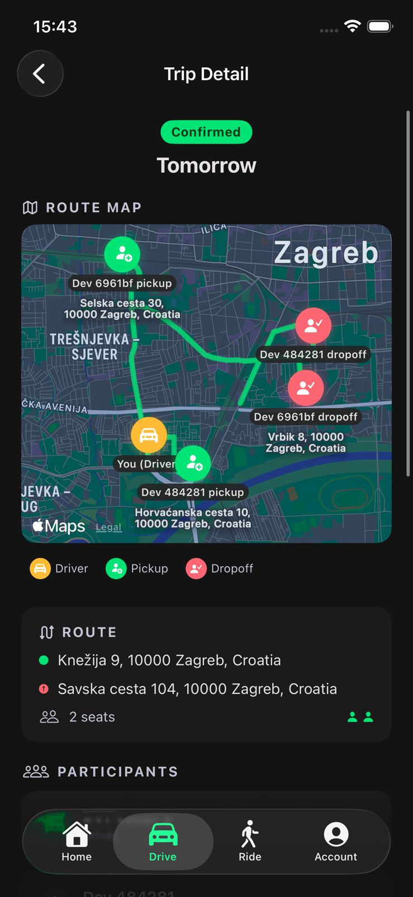

Smarter city commutes, every day

Same corridors, same times, thousands of empty seats.
A commute carpool app that matches
drivers and riders on the same city corridors,
across recurring commute windows, from morning to after-work peaks.
No manual coordination. No driver approval step.
Seats fill up, a route is computed, everyone gets their schedule.
People are ready to share rides. They need a simple, reliable commute flow.

Start by selecting your role
Each user picks whether they are driving or riding along for this trip, then follows the matching flow for that role.

Create route, date, and seats
The driver publishes a commute trip with pickup and destination details, then opens available seats for riders.

Search by route and arrival time
Riders enter where they start, where they go, and when they need to arrive. The app ranks the best available trips.

Seat is reserved automatically
Riders apply to a selected trip. Seats fill automatically, without manual chat coordination or driver-side approval loops.

Pickup times, stops, and status in one view
Driver and riders get the same coordinated plan with route visibility, timing, and trip progress.

Our advantage is daily habit: the same users can repeat this flow every commute day.
Full REST API, real-time route computation, zero-config local dev
Less cars. Less traffic. Same city.
Let's see Zagreb Flow in action.
Thank you!